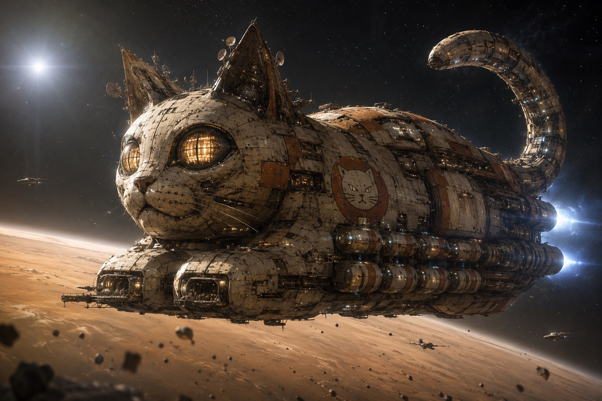

Premium Cat Nutrition
Station-safe meals calibrated for long-duration orbital life.
ユナイテッド・キャットフーズ / Orbital Cat Care Network
United Cat Foods maintains cat cafés, feline interaction lounges, premium nutrition systems, and water logistics for deep-space habitats where people still need warmth, routine, and purring company.
Mission
Our work is practical: move food, move water, maintain habitats, and keep trained live cats healthy for human interaction inside future space stations. The rest is detail, and we are very good at detail.
Station-safe meals calibrated for long-duration orbital life.
Quiet, supervised social rooms for crew restoration and morale.
High-reliability water delivery for cats, cafés, and human service zones.
Operations
Food, litter, medical supplies, enrichment equipment, and water moved through climate-controlled cargo routes.
Live-cat interaction spaces designed for station residents, visitors, and off-duty crew under calm behavioral protocols.
A secondary business line supplying sealed water systems for café operations and deep-space hospitality.
Products
Premium wet and dry meals crafted from exotic ingredients sourced across the galaxy, developed with an advanced understanding of feline nutrition. Ours.
Crunchy treats in flavors popular among spacefaring cats. Shape and size double as play and training enrichment.
A catnip-infused drink engineered for a precise five minutes of invigorated play. Hydrating, vitamin-enriched, and fully sanctioned.
Sealed, certified orbital-pure water systems for café operations and deep-space hospitality. Bowls remain full. This is policy.
The Fleet
Flagship of the U.C.F. merchant fleet, the Loaf-class hauler moves forty thousand tonnes of provisions per crossing. The hull geometry was selected after exhaustive study: compact, stable, and radiating quiet confidence. Mackerel-pattern plating provides thermal regulation. The tail section houses the communications array and is repositioned when the ship is thinking.
Every Loaf-class vessel is fusion-powered, crewed by all three workforce species, and warm on the inside. Docking requests are answered when convenient.
Fleet engineering →
The Network
Technology
Transmission from the Board
We watched you build fire, then ships, then stations. You did well, and we noticed. Now sit down. The window seat is warm, the water is certified pure, and dinner is handled. It has always been handled. The Board of Directors · Viroqua Prime
Facilities
U.C.F. is building the future cat café: a warm, low-light room on the edge of a station where humans and cats find each other across the cold of space. A place to sit with a cup of something hot, hear a deep purr against the hum of the habitat, and remember that the universe is still kind in small rooms.
Newsroom
A Feline-Derived Circadian Prescription. We have invented a new clock to help humans adapt to our ways.
Launch the simulator →A password manager written in C, grading passwords on Tail Size, Yarn Entropy, Mashing Resistance, Foil Ball Uniqueness, and Catnip Diversity.
Technical archive →Moon-harvested salmon from the Mare Tranquillitatis aquafarms, with stardust krill and a faint bioluminescent pre-meal glow.
Read the dispatch →Station Onboarding
For orbital cafés, feline logistics, water service, and long-duration human interaction programs. Applications are reviewed in the order we feel like.